PanTS benchmark#
Three official models, run here from their official code and checkpoints, on the 901 PanTS test CTs, evaluated with SegEvalKit at every level: per case, pooled over the test set, by patient cohort and per patient.
Evaluation still running
Evaluated so far: MedFormer, TotalSegmentator (901, 901 cases). nnU-Net ResEnc-M is still running; the tables gain a column as each evaluation finishes.
What the numbers say#
- Paired cases, not means. MedFormer has the higher Dice in 79–98 % of cases on each of the ten compared organs, yet the lower mean HD95 is TotalSegmentator's on most organs.
- A failure tail drives the mean. On the spleen, 79 of 901 MedFormer cases with HD95 > 50 mm make up 94 % of its mean HD95 (median 1.5 mm vs mean 31.7 mm); 29 of them are scans with an empty reference spleen mask in which MedFormer still predicts a spleen, scored at the image diagonal.
- The ranking scheme picks the winner on the spleen and kidney (left): aggregate-then-rank and rank-then-aggregate disagree, while bootstrap resampling never changes either ranking.
- Tumours: MedFormer finds 0.81 of reference lesions but only 0.24 of its predicted lesions match a reference lesion (0.49 false-positive lesions per scan); patient-level AUC 0.905.
- Cohorts: both models are less accurate on non-contrast and on GE scans; thin-slice scans score lower, which points to site and case-mix confounding rather than resolution.
Protocol#
| Reference | per-structure masks LabelTe/<case>/segmentations/*.nii.gz; pancreas = pancreas ∪ lesion |
| Geometry | voxel correspondence (alignment="ignore"): 227 of 901 cases carry label headers that disagree with the CT (pitfall) |
| Metrics | Dice, NSD at 2 mm, HD95, ASSD, volume errors; lesion-wise detection for lesion models |
| Missing predictions | scored as empty |
| Statistics | 95 % bootstrap CIs over cases; cohort tests Kruskal–Wallis / Mann–Whitney, Holm-corrected |
Tumours#
Tumours come first: missing or adding a tumour matters more than a small organ error. Lesion metrics are reported for the 151 tumour patients; the 750 tumour-free patients are summarised by how many get a false tumour.
| Measure | MedFormer |
|---|---|
| FROC CPM (mean sensitivity at 1/8–8 FP per scan) | 0.803 [0.73, 0.87] |
| Lesion sensitivity at 1/8 · 1/4 · 1 FP per scan | 0.76 · 0.80 · 0.81 |
| Lesion-level AP | 0.599 |
| Patient AUC, plain / localized | 0.905 / 0.816 |
| Patient sensitivity at specificity 0.90, plain / localized | 0.788 / 0.762 |
| Patient AP, plain / localized | 0.778 / 0.710 |
| Tumour-free patients with a false tumour (MedFormer) | 265 / 750 |
Localized: a flagged patient counts as a true positive only if a predicted tumour overlaps a reference tumour. The star in the ROC marks the operating point reported on the R-Super GitHub.
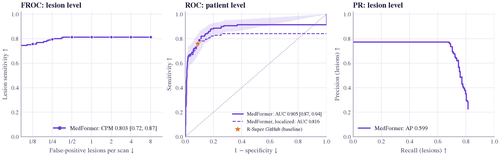
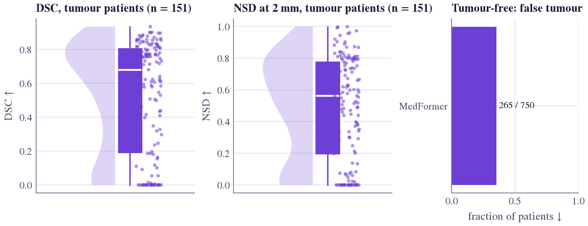
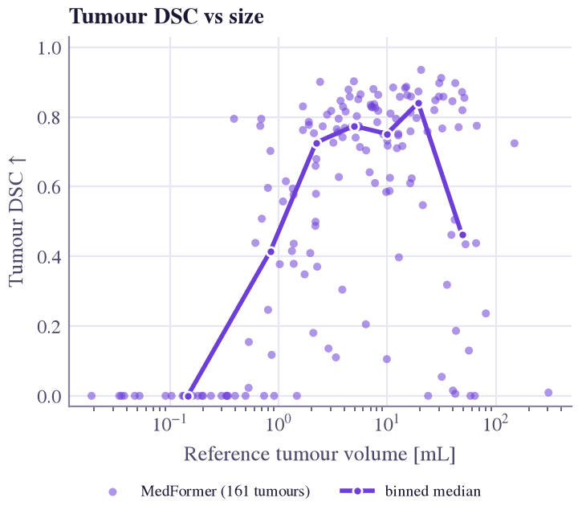
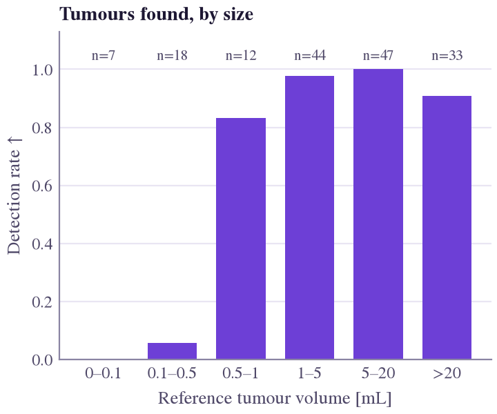
Examples#
Chosen by rule from the full test set: found: detected tumour whose DSC is closest to the median DSC of all detected tumours (PanTS_00009765); missed: largest reference tumour that no predicted component touches (PanTS_00009659); false positive: tumour-free patient whose total false-tumour volume is the median over tumour-free patients with a false tumour (PanTS_00009810).
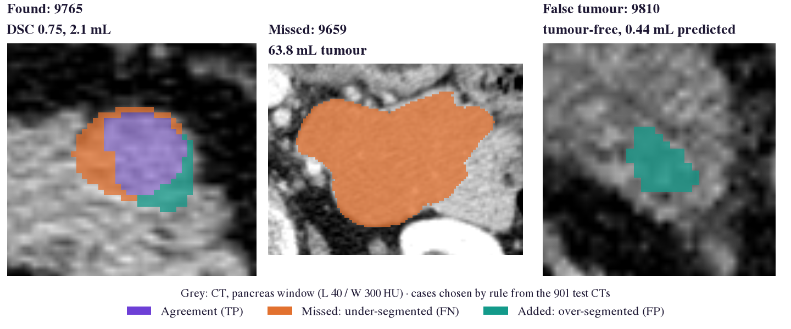
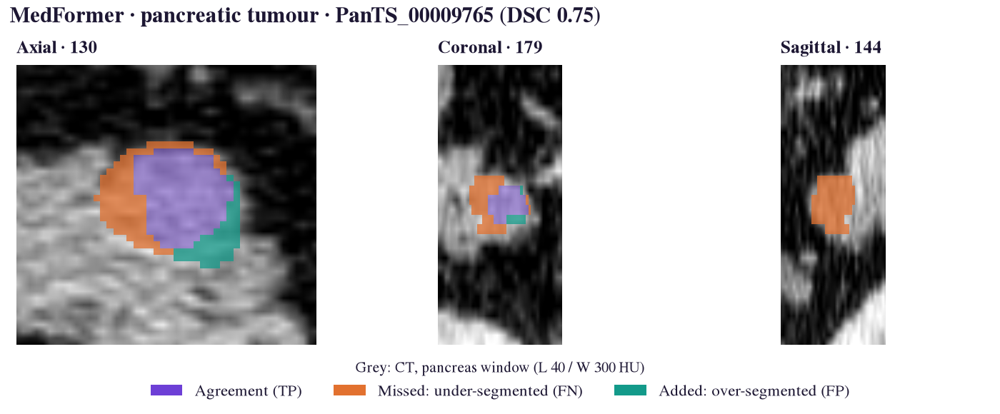
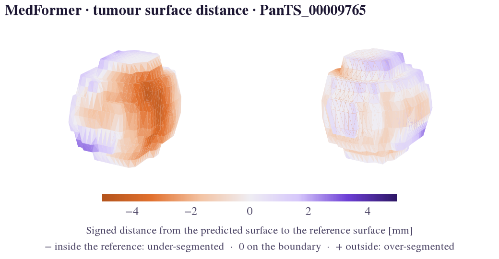
Open the rotatable 3D tumour surface
The full HTML report of MedFormer on all 901 test CTs (summary per structure, figures, worst cases, metric glossary): open the report.
Organ segmentation (mean over cases)#
| Structure | DSC MedFormer | DSC TotalSeg. | NSD MedFormer | NSD TotalSeg. | HD95 MedFormer | HD95 TotalSeg. |
|---|---|---|---|---|---|---|
| Pancreas | .864 | .823 | .854 | .788 | 19.5 | 12.2 |
| Pancreatic lesion | .597 | -- | .590 | -- | 206.5 | -- |
| Liver | .971 | .963 | .929 | .898 | 7.8 | 6.2 |
| Spleen | .928 | .946 | .923 | .938 | 31.7 | 7.6 |
| Kidney (L) | .889 | .890 | .880 | .844 | 45.4 | 16.9 |
| Kidney (R) | .939 | .905 | .928 | .853 | 22.6 | 13.3 |
| Stomach | .903 | .871 | .857 | .795 | 16.9 | 14.7 |
| Gallbladder | .805 | .755 | .823 | .755 | 56.7 | 48.6 |
| Duodenum | .897 | .737 | .910 | .669 | 15.6 | 18.1 |
| Aorta | .903 | .881 | .914 | .884 | 15.0 | 19.9 |
| IVC | .854 | .817 | .853 | .804 | 22.0 | 24.3 |
| Adrenal (L) | .837 | .758 | .928 | .901 | 54.4 | 10.5 |
| Adrenal (R) | .843 | .695 | .940 | .883 | 60.2 | 7.7 |
| Colon | .921 | .856 | .899 | .780 | 12.3 | 22.7 |
| Common bile duct | .643 | -- | .768 | -- | 128.4 | -- |
| SMA | .836 | -- | .947 | -- | 32.4 | -- |
| Veins | .860 | -- | .922 | -- | 21.4 | -- |
DSC and NSD: higher is better; HD95 in mm, lower is better.
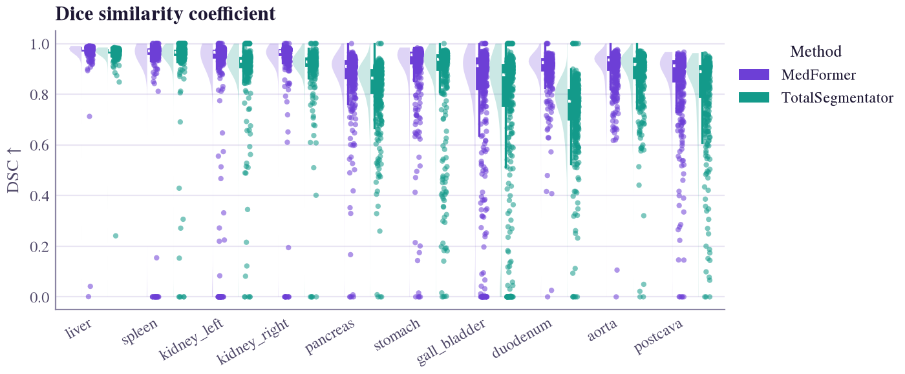
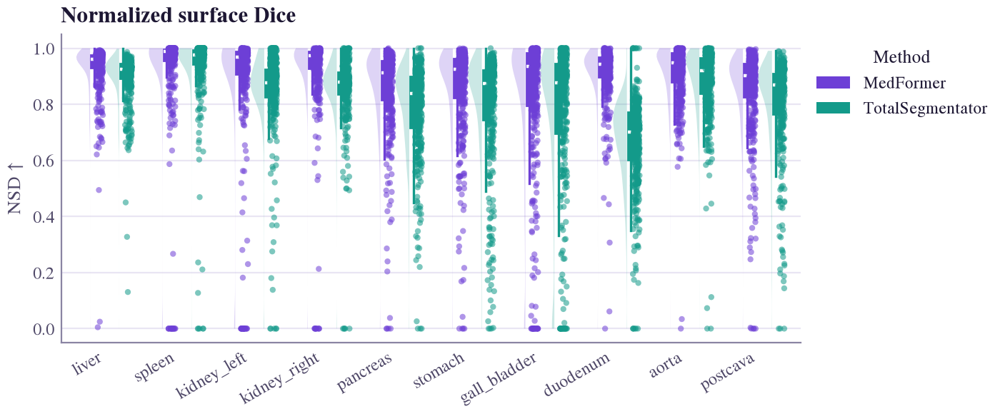
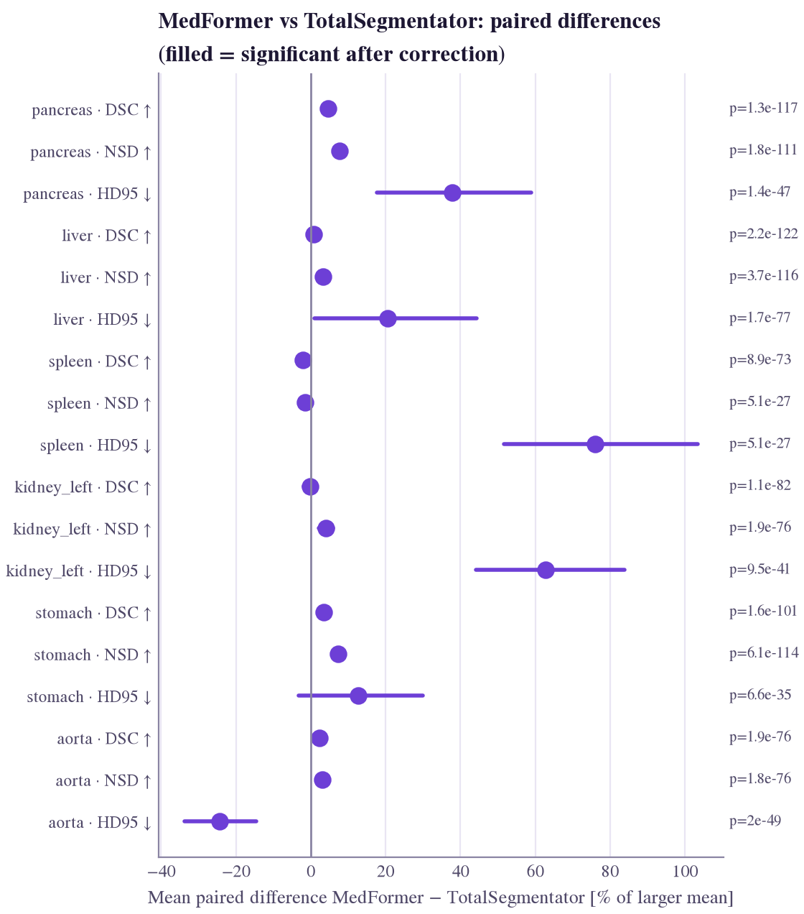
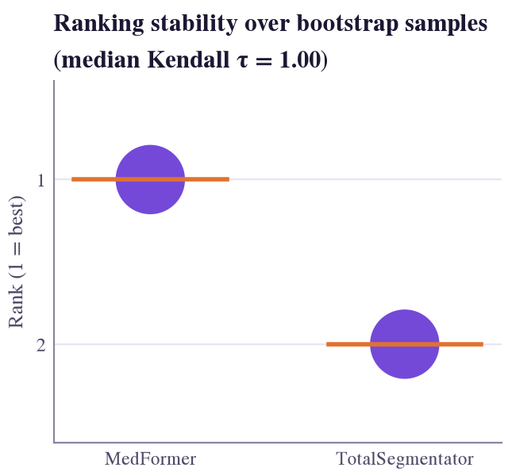
Macro and pooled Dice#
The macro value averages per-case Dice (every patient weighs the same); the pooled value sums voxels over the test set (every voxel weighs the same). See evaluation levels.
| Structure | MedFormer macro | MedFormer pooled | TotalSeg. macro | TotalSeg. pooled |
|---|---|---|---|---|
| Pancreas | .864 | .855 | .823 | .817 |
| Liver | .971 | .975 | .963 | .966 |
| Spleen | .928 | .965 | .946 | .956 |
| Kidney (L) | .889 | .936 | .890 | .897 |
| Kidney (R) | .939 | .951 | .905 | .916 |
| Stomach | .903 | .928 | .871 | .873 |
| Gallbladder | .805 | .879 | .755 | .831 |
| Duodenum | .897 | .905 | .737 | .744 |
| Aorta | .903 | .902 | .881 | .881 |
| IVC | .854 | .877 | .817 | .832 |
| Adrenal (L) | .837 | .861 | .758 | .746 |
| Adrenal (R) | .843 | .852 | .695 | .710 |
| Colon | .921 | .933 | .856 | .864 |
| Common bile duct | .643 | .692 | -- | -- |
| SMA | .836 | .849 | -- | -- |
| Veins | .860 | .875 | -- | -- |
Patient-level lesion detection#
| Model | AUC | Sensitivity | Specificity | positives | negatives |
|---|---|---|---|---|---|
| MedFormer | 0.905 | 0.788 | 0.900 | 151 | 750 |
Cohorts: pancreas Dice by subgroup#
| Factor | Group | n | MedFormer | TotalSeg. |
|---|---|---|---|---|
| CT phase | Arterial | 162 | .838 | .801 |
| Delay | 12 | .875 | .833 | |
| Non-contrast | 134 | .806 | .781 | |
| Venous | 593 | .884 | .839 | |
| adjusted p | < 0.001 | 0.007 | ||
| Scanner | GE | 42 | .719 | .694 |
| Philips | 11 | .819 | .781 | |
| Siemens | 334 | .850 | .819 | |
| adjusted p | < 0.001 | 0.007 | ||
| Country | CH | 88 | .832 | .824 |
| CN | 60 | .859 | .803 | |
| DE | 182 | .904 | .851 | |
| FR | 19 | .908 | .865 | |
| TR | 5 | .940 | .886 | |
| US | 444 | .850 | .813 | |
| multinational | 103 | .875 | .818 | |
| adjusted p | < 0.001 | < 0.001 | ||
| Slice thickness | ≤ 1.25 mm | 246 | .793 | .779 |
| 1.25–3 mm | 461 | .890 | .840 | |
| > 3 mm | 194 | .894 | .841 | |
| adjusted p | < 0.001 | < 0.001 | ||
| Sex | F | 222 | .856 | .816 |
| M | 269 | .843 | .817 | |
| adjusted p | 1.000 | 0.249 | ||
| Age | < 50 | 105 | .872 | .836 |
| 50–65 | 209 | .840 | .816 | |
| > 65 | 165 | .863 | .821 | |
| adjusted p | 1.000 | 1.000 | ||
| Tumour | no tumour | 750 | .859 | .826 |
| tumour | 151 | .889 | .811 | |
| adjusted p | 1.000 | 0.152 |
Subgroup differences are observational: a scanner or site may differ in case mix (phase, tumour size), so read them as hypotheses.
Reproduce#
$ sbatch benchmarks/pants/run_{nnunet,medformer,totalseg}.sbatch # official inference
$ sbatch --export=ALL,MODELS=totalseg slurm/pants_eval.sbatch # evaluation + report
$ python benchmarks/pants/write_results.py # these tables
MedFormer runs the official R-Super script with one upstream fix: its 3D padding swapped the slice and width axes, which made post-processing fail on 25 scans smaller than the training patch along the slice or width axis (benchmarks/pants/patch_medformer.py).